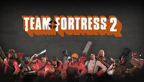

무료게임
1위: 카스글옵

게임 설명: 잘하면 재밌는 게임의 대명사 추억보정도 있고 지금해도 재밌음(단, 잘해야 함)
게임 평가: ****
2위:팀포트리스2
게임 설명: 지금은 잘 모르겠는데 진짜 추억보정 하나로 여기까지 온 게임
게임 평가:***
3위: 발로란트

게임 설명: 이게 왜 여기 있냐?
게임 평가:-***
게임 설명: 잘하면 재밌는 게임의 대명사 추억보정도 있고 지금해도 재밌음(단, 잘해야 함)
게임 평가: ****
게임 설명: 지금은 잘 모르겠는데 진짜 추억보정 하나로 여기까지 온 게임
게임 평가:***
게임 설명: 이게 왜 여기 있냐?
게임 평가:-***